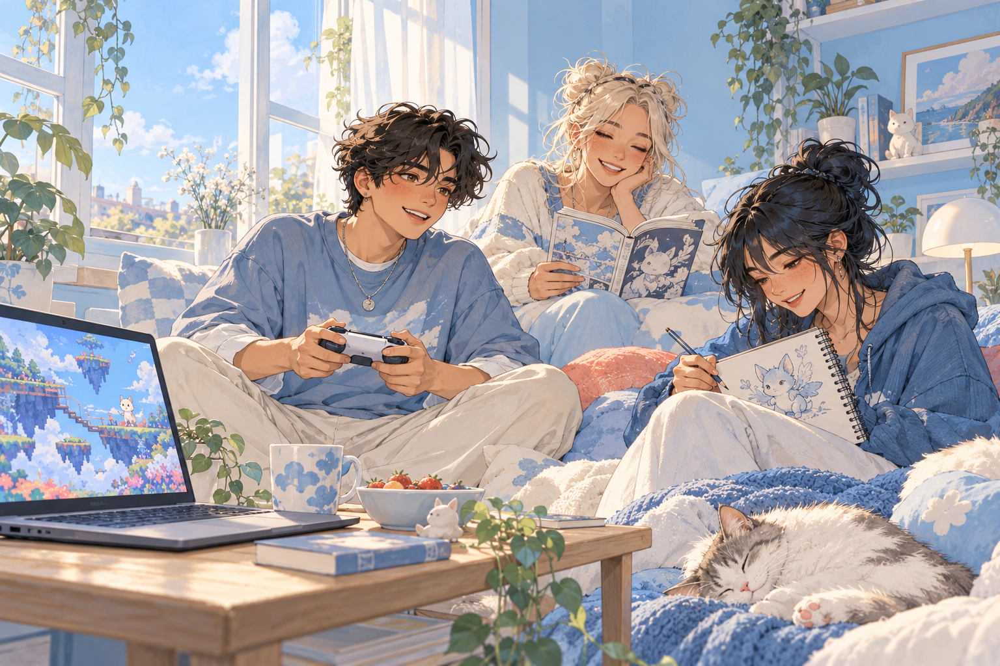

M MANUAL Para ti
🎮 UNA TARDE TRANQUILA
lunamora ✳
Anime · juegos · ilustración
🎮 Juegos cozy𖦹 Manga♫ Lo-fi
Un espacio para encontrar personas con intereses parecidos, compartir tus aficiones a tu ritmo y conversar sin prejuicios.

Anime · juegos · ilustración
No necesitas construir un perfil perfecto. Manual te ayuda a descubrir puntos en común y abrir conversaciones de forma natural.
Presenta tu perfil con el nombre que prefieras. Tú decides cuándo compartir algo más.
Videojuegos, anime, manga, música y otras aficiones que forman parte de ti.
Descubre personas con intereses afines y envía una solicitud cuando te sientas preparado.
Explora perfiles por intereses y, si lo prefieres, por zona. La ubicación siempre es opcional.
Bilbao · usa nickname
Valencia · nickname visible
Tu zona · comparte cuando quiere
Explora publicaciones, descubre afinidades y presenta tu perfil con el nivel de detalle que prefieras.
Una tarde tranquila entre partidas, manga y café ☁
Recomendaciones y conversaciones para compartir.
Anime, música y videojuegos independientes. Aquí comparto mis recomendaciones.
Elige tus aficiones y encuentra comunidades donde hablar de ellas con naturalidad. Un juego, una canción o una historia pueden ser el primer punto en común.
Empieza con tu nickname. La ubicación exacta no se muestra. Tú eliges si quieres explorar por zona y quién puede ver tu nombre real.
Manual Para Ser Un Pringado